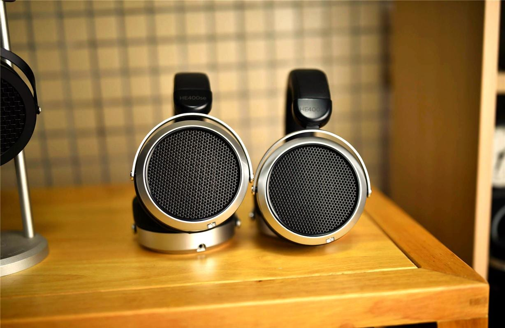

HiFiMAN HE400SE

七百元平板振膜，入门体验平板声的捷径
客观评测
HE400SE 是 HiFiMAN 入门级开放式平板耳机，采用纳米级厚度振膜与隐形磁体技术，减少磁路对声波的遮挡干扰。频响 20Hz–20kHz，阻抗 32Ω、灵敏度 91dB，重量约 390 克。实测平板振膜带来开阔规整的声场与出色的瞬态响应，中频密度高，高频细腻延展自然，低频质感干净、需要电流支撑。91dB 灵敏度对前端推力仍有要求，搭配耳放后动态与控制力明显提升。
主观点评
HE400SE 让“平板之梦”变得触手可及。接上像样的前端，声场瞬间打开，乐器排布清晰有序，那种通透与从容是同价位动圈难以给予的。它不算精致，塑料外壳略显朴素，佩戴夹力适中偏紧；但当大编制交响涌来时，你会明白这些妥协的意义。对预算有限却想一窥平板振膜魅力的烧友，它是最友好的那扇大门。
优点与不足
- 平板振膜带来开阔声场与出色瞬态
- 中频密度高，高频细腻，失真控制好
- 可换线设计，入门平板中性价比突出
- 91dB 低灵敏度，吃电流，需耳放伺候
- 塑料外壳做工朴素，细节处理一般
- 开放式漏音，且约 390g 重量不算轻
参数规格
| 类型 | 开放式平板振膜头戴 |
|---|---|
| 单元 | 纳米级振膜平板单元 |
| 频响 | 20Hz–20kHz |
| 阻抗 | 32Ω |
| 灵敏度 | 91dB |
| 重量 | 约 390g |
| 线材 | 1.5m 可换双边线（3.5mm） |
| 接口 | 3.5mm + 6.35mm 转接头 |
| 磁体 | 隐形磁体技术，减少声波干扰 |
| 耳罩 | 混合织物 + 皮革耳罩 |